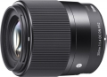

器材库 > APS画幅镜头 > DC 30/1.4 DN

详细规格
镜头类型
标准镜头
发布日期
2016-02-23
焦距
30mm
等效35mm画幅焦距
M4/3卡口：60mm 索尼E卡口：45mm
最大光圈
f/1.4
最小光圈
f/16
视角（对角）
50.7°
镜头结构
9片/7组
光圈叶片
9片
最近对焦距离
30cm
最大放大倍率
1:7
滤镜口径
52mm
镜头卡口
Micro 4/3, Sony E
防抖
否
颜色
黑色
尺寸
64.8×73.3mm
重量
265g
附件
遮光罩(LH586-01)
kanon2016-05-19 23:144.5 分
操作性 4.50耐用性 4.00性价比 4.50解像力 5.00色彩还原 4.50机械结构 4.50
产品图 / 样片
DC 30/1.4 DN
评测 / 相关文章
- 详细内容 （存档）
- 简约而不简单 适马30mm F1.4测评 （存档）
- ［资讯］DxOMark公布适马30/1.4DC DN C成绩 （存档）
- ［试用］适马30/1.4 DN DC网友试用报告 （存档）
- ［试用］非常值得入手 无忌泡菜实测适马30/1.4 （存档）
- ［试用］适马30mm F1.4 DN实拍样张 （存档）
- ［资讯］适马30mm f/1.4 DC DN镜头开箱图赏 （存档）
- ［专题］向突破致敬 评适马黑科技新品 （存档）